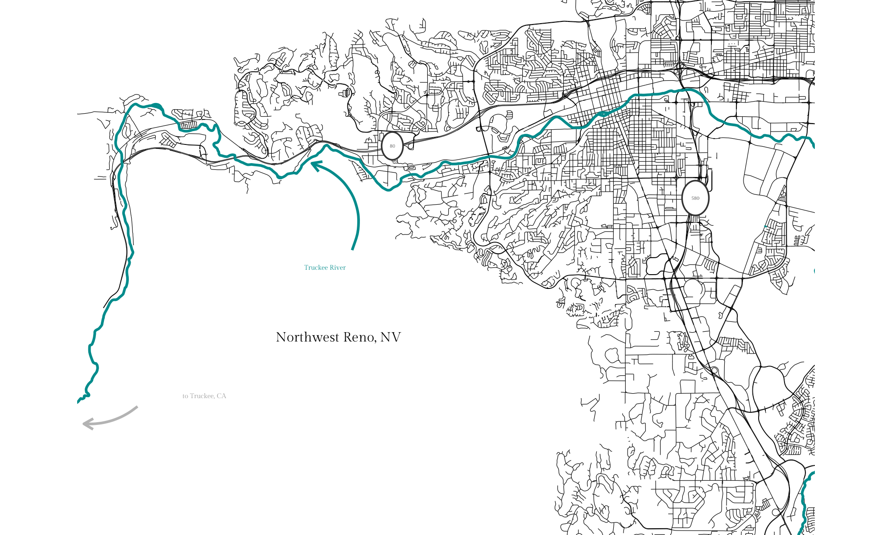

In this project, I create a little map of northwest Reno, NV, streets using the osmdata (OpenStreetMap) package.
Credit: Thanks to Joshua McCrain for this great post!
tidyverse: Wickham et al., (2019). Welcome to the tidyverse. Journal of Open Source
Software, 4(43), 1686, https://doi.org/10.21105/joss.01686showtext: Yixuan Qiu and authors/contributors of the included software. See file AUTHORS for details.
(2022). showtext: Using Fonts More Easily in R Graphs. R package version 0.9-5.
https://CRAN.R-project.org/package=showtextosmdata: Mark Padgham, Bob Rudis, Robin Lovelace, Maëlle Salmon (2017). osmdata Journal of Open Source Software, 2(14).
URL https://doi.org/10.21105/joss.00305ggmap: D. Kahle and H. Wickham. ggmap: Spatial Visualization with ggplot2. The R Journal, 5(1), 144-161. URL
http://journal.r-project.org/archive/2013-1/kahle-wickham.pdf# Attach packages:
library(tidyverse)
library(osmdata)
library(showtext)
library(ggmap)
library(ggforce)
library(here)
# Import font
font_add_google(name = "Gilda Display", family = "gilda") # add custom fonts
showtext_auto()
# Get bounding box for Reno
reno <- getbb("Reno Nevada")
# Get main roads, medium roads, small roads, and rivers
reno_main <- reno %>%
opq()%>%
add_osm_feature(key = "highway",
value = c("motorway", "primary", "motorway_link", "primary_link")) %>%
osmdata_sf()
reno_med <- reno %>%
opq()%>%
add_osm_feature(key = "highway",
value = c("secondary", "tertiary", "secondary_link", "tertiary_link")) %>%
osmdata_sf()
reno_small <- reno %>%
opq()%>%
add_osm_feature(key = "highway",
value = c("residential", "living_street")) %>%
osmdata_sf()
# Access Truckee River
reno_river <- reno %>%
opq()%>%
add_osm_feature(key = "waterway", value = "river") %>%
osmdata_sf()
# Create endpoints of the arced arrow (to annotate the Truckee River)
arrow <- data.frame(x1 = -119.91, x2 = -119.925, y1 = 39.485, y2 = 39.51)
arrow_2 <- data.frame(x1 = -119.99, x2 = -120.01, y1 = 39.44, y2 = 39.435)
# Combine them in a map!
ggplot() +
geom_sf(data = reno_main$osm_lines, size = 0.1) +
geom_sf(data = reno_med$osm_lines, size = 0.1) +
geom_sf(data = reno_small$osm_lines, size = 0.1) +
geom_sf(data = reno_river$osm_lines, size = 0.5, color = "cyan4") +
geom_curve(data = arrow, aes(x = x1, y = y1, xend = x2, yend = y2),
arrow = arrow(length = unit(0.02, "npc")),
color = "cyan4") +
geom_curve(data = arrow_2, aes(x = x1, y = y1, xend = x2, yend = y2),
arrow = arrow(length = unit(0.02, "npc")),
color = "gray70",
curvature = -0.2) +
coord_sf(xlim = c(-120.0, -119.75), ylim = c(39.41, 39.55)) +
theme_void() +
theme(text = element_text(family = "gilda")) +
annotate(geom = "text",
x = -119.915, y = 39.46,
label = "Northwest Reno, NV",
family = "gilda",
size = 30) +
annotate(geom = "text",
x = -119.92, y = 39.48,
label = "Truckee River",
family = "gilda",
color = "cyan4",
size = 20
) +
annotate(geom = "text",
x = -119.965, y = 39.443,
label = "to Truckee, CA",
family = "gilda",
color = "gray60",
size = 20
) +
geom_circle(aes(x0 = -119.895, y0 = 39.515, r = 0.004), fill = "white", color = "gray20", size = 0.3) +
annotate(geom = "text",
x = -119.895, y = 39.515,
label = "80",
family = "gilda",
color = "gray20",
size = 12
) +
geom_circle(aes(x0 = -119.782, y0 = 39.50, r = 0.005), fill = "white", color = "gray20", size = 0.3) +
annotate(geom = "text",
x = -119.782, y = 39.50,
label = "580",
family = "gilda",
color = "gray20",
size = 12
)
ggsave("featured_nw_reno.png", height = 4, width = 7, dpi = 600)knitr::include_graphics(here::here("content", "post", "2022-03-08-nw-reno-roads", "featured_nw_reno.png"))